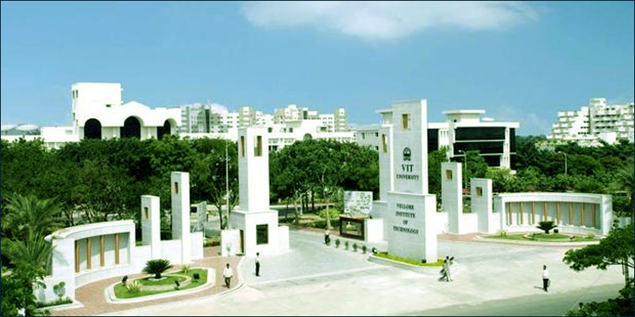
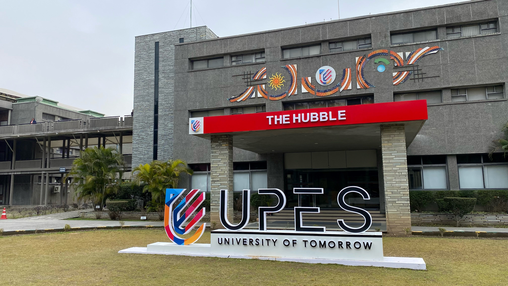

Private universities in India are regulated under the UGC (Establishment and Maintenance of Standards in Private Universities) Regulations, 2003. Per the UGC act and these regulations, private universities are established by an act of a local legislative assembly and listed by the UGC in the Gazette upon receiving the act. As confirmed by ruling of the Supreme Court of India, recognition by the UGC is required for the university to operate. Also, per the 2003 regulations, the UGC sends committees to inspect the private universities and publishes their inspection report.
The UGC publishes and regularly updates the lists of private universities. As of 4 March 2022, the UGC consolidated list of universities lists 403 private universities. The earliest date of notification is that of Sikkim Manipal University, 11 October 1995. Private universities were established in 24 of the 28 states of India and in none of the 8 union territories.
TOP PRIVATE UNIVERSITIES IN INDIA
| S.NO. | TOP PRIVATE UNIVERSITIES | STATE | CITY | NIRF RANKING |
|---|---|---|---|---|
| 1 | VIT VELLORE | TAMIL NADU | VELLORE | 9 |
| 2 | SRM CHENNAI | TAMIL NADU | CHENNAI | 36 |
| 3 | NMIMS | MAHARASHTRA | MUMBAI | 51 |
| 4 | UPES DEHRADUN | UTTARAKHAND | DEHRADUN | 65 |
| 5 | CHRIST UNIVERSITY | KARNATAKA | BANGALORE | 71 |
VIT VELLORE
 Vellore Institute of Technology (VIT) is a private research deemed university located in Katpadi in Vellore, India. Founded in 1984 as Vellore Engineering College by G. Viswanathan, the institution offers 66 Undergraduate, 58 Postgraduate, 15 Integrated, 2 Research and 2 M.Tech Industrial Programmes. It has campuses in Vellore and Chennai and sister universities in Amaravati and Bhopal. The Government of India has recognized VIT as one of the Institutions of Eminence (IoE) of India. It is one of the most prestigious technical institutes in India, consistently ranking high in the MoE's NIRF rankings. In 2022, the VIT group entered into the domain of school education.
VIT consolidated its disciplines into 20 Schools of Study with the addition of the VIT Law School at its Chennai campus. It implements the Fully Flexible Credit System (FFCS) which gives the students flexibility to make their own time tables by choosing the subjects and the faculties under whose guidance they want to study. 33 Professors of VIT are among the top 2% scientists of the world, shown in a survey conducted by Stanford University in 2021.
UPES DEHRADUN
 The University of Petroleum & Energy Studies, commonly known and doing business as UPES, is a private university in Dehradun, made up of the School of Engineering, the School of Computer Science, the School of Design, the School of Law, the School of Business, the School of Health Sciences & Technology, the School of Modern Media and the School of Liberal Studies.
UPES was established in 2003 through the UPES Act, 2003 by the state legislature of Uttarakhand. From 2013 to 2019, the university was part of the United States-based Laureate International Universities network. In 2019, UPES entered into an academic collaboration with Global University Systems, a Dutch educational network, initially by signing a memorandum of understanding and then as a full member, for education, training and research cooperation. Since its establishment in 2003, UPES has expanded into two campuses, Energy Acres and Knowledge Acres, in Bidholi and Kandoli in the Dehradun district. The corporate office is based in New Delhi. UPES is recognised by the UGC and is accredited with grade 'A' by the NAAC.
CHRIST UNIVERSITY
 CHRIST (Deemed to be University), is a university in Bangalore, Karnataka, India. Founded in 1969 as Christ College, the University Grants Commission (UGC) of India conferred autonomy to Christ College in 2004. On 22 July 2008 it was declared as an institution deemed to be university under section 3 of UGC Act 1956 by the Ministry of Education (India). The university is under the management of the priests of the Catholic religious order, Carmelites of Mary Immaculate (CMI), part of Syro Malabar Major Archiepiscopal Church. In 2016, the university was accredited by National Assessment and Accreditation Council with A Grade.
CHRIST (Deemed to be University), is a university in Bangalore, Karnataka, India. Founded in 1969 as Christ College, the University Grants Commission (UGC) of India conferred autonomy to Christ College in 2004. On 22 July 2008 it was declared as an institution deemed to be university under section 3 of UGC Act 1956 by the Ministry of Education (India). The university is under the management of the priests of the Catholic religious order, Carmelites of Mary Immaculate (CMI), part of Syro Malabar Major Archiepiscopal Church. In 2016, the university was accredited by National Assessment and Accreditation Council with A Grade.
The university's main campus is spread over 25 acres and is part of the 100-acre (40 ha) Dharmaram College Campus in the central part of Bangalore city. It is on the extension of Hosur Road (NH 7) opposite the Bangalore Dairy Circle Flyover. The city campus is close to residential localities such as BTM Layout, a residential and commercial area; Koramangala, another large neighborhood; and Jayanagar, one of the largest residential neighborhoods in Bangalore.